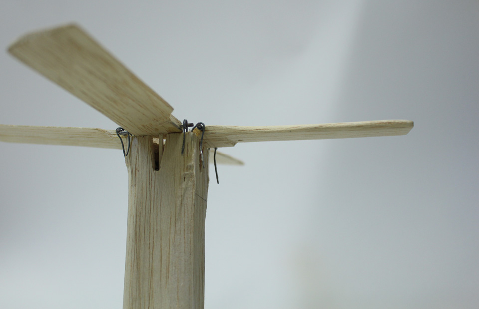
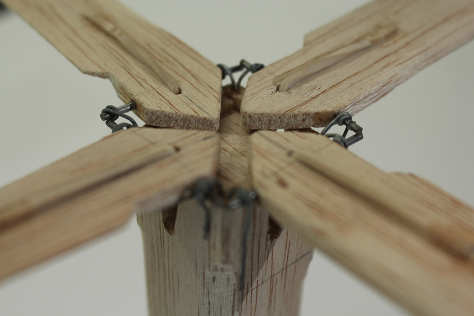
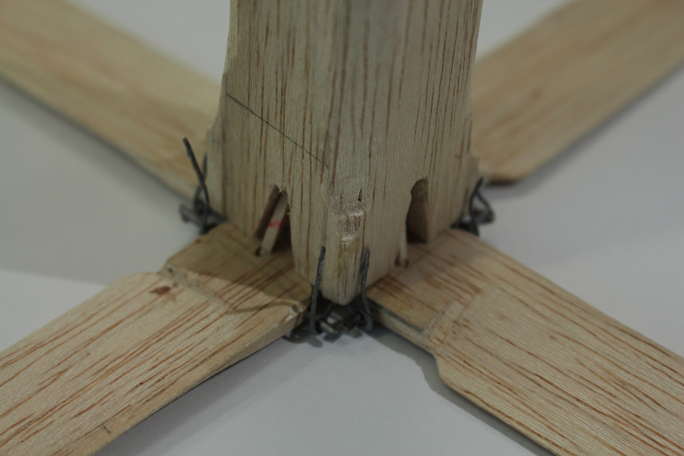
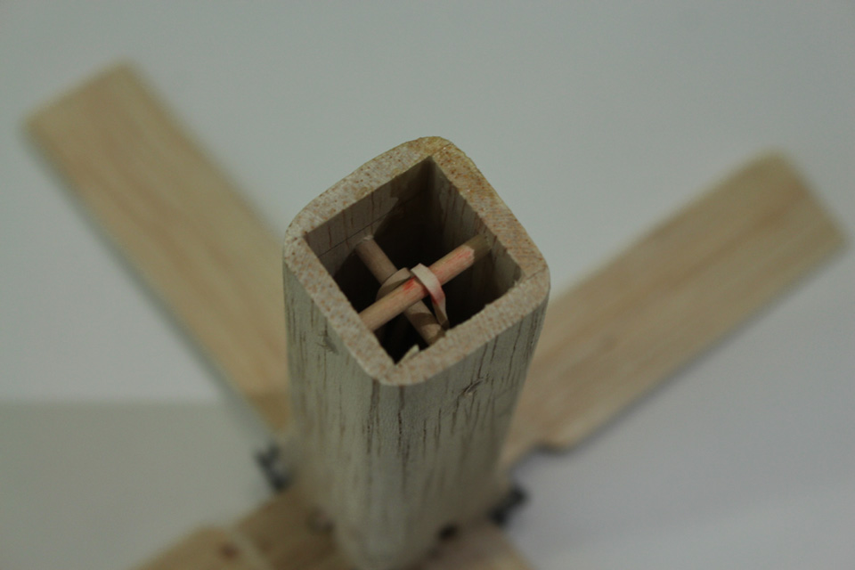
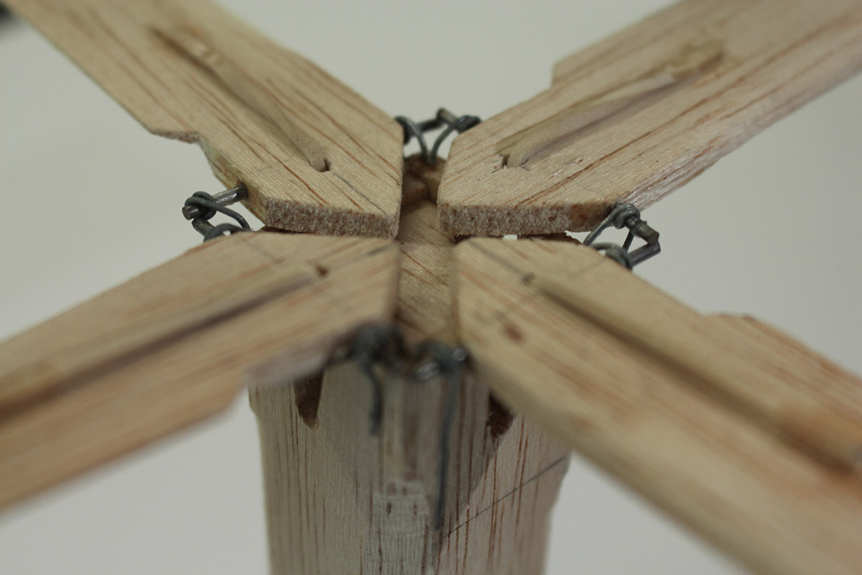
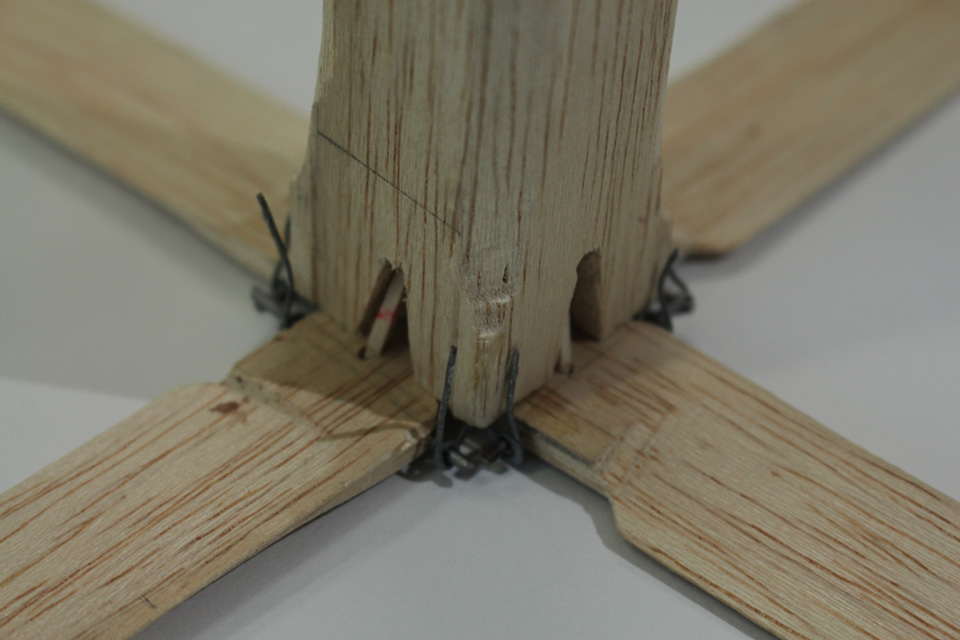
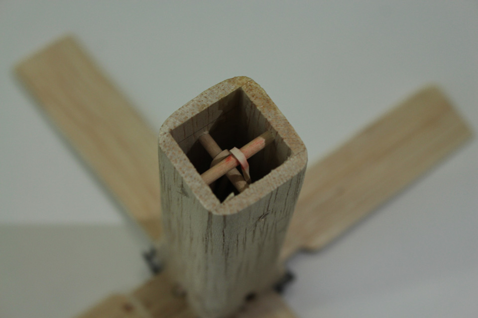

Pendant un mois, j'ai eu le privilège de travailler en collaboration avec
Ymanol Silly-Vergara
et
Maëll Hym
, deux pointures de ma promotion à l'Esad
d'Amiens, pour développer, de A à Z, ce quadricoptère en balsa à propulser
dans les airs à la manière de la pelote basque.
Le système de déploiement des ailes repose sur des
élastiques tendus dans le corps creux de l'appareil qui plient des ailes le long de celui-ci lors de son
lancer grace à la force d'inertie.
Au sommet de son saut, la force du vent s'amenuise puis disparait laissant place au déploiement des ailes convexes taillées selon l'observation des graines d'érable. Le dispositif plane en tournoyant sur plusieurs mètres selon son altitude, et atterrit doucement.
 




